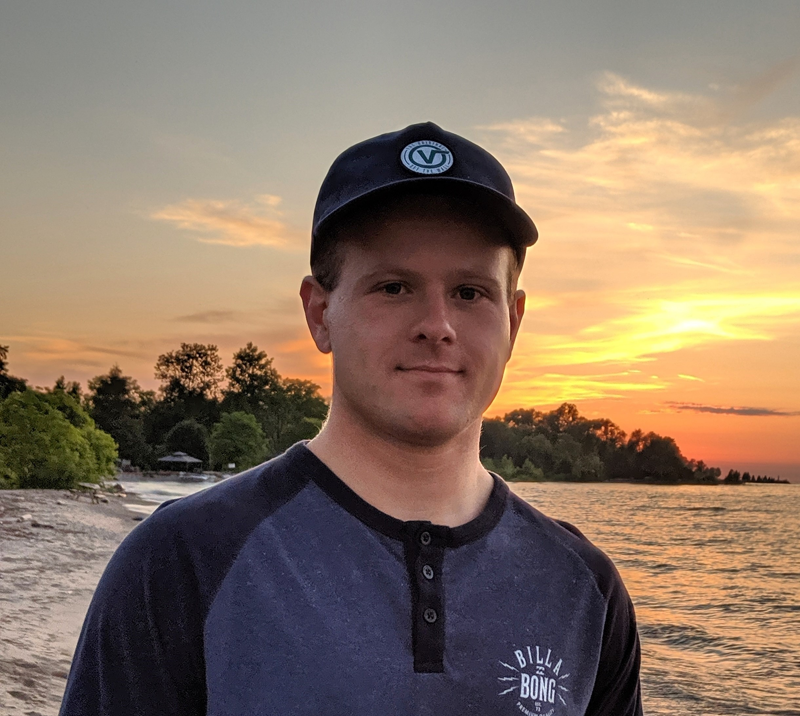
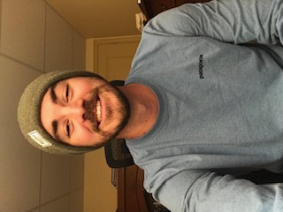

Brooke graduated from the Environmental Sustainability (HBASc) program at Lakehead University in 2019. In her fourth year she also worked as a tutor for GIS and environmental science classes. She has previously worked with the Ontario Federation of Anglers and Hunters to spread awareness of invasive species and EDDMapS. For this project Brooke focused on spatial analyses and ArcGIS Online. After graduating from Fleming College she hopes to follow a career path involving sustainable development and resource management.
Daniel is a 2019 University of Guelph Graduate form the Geomatics program. He has previously focused in fields such as coastal geomorphology and has done research on soil and gully erosion mapping for OMAFRA. For this project Daniel focused heavily on the programming and the creation of applications for predicting areas at risk along the pipe network and integrating it as a web application in ArcGIS Online. He plans on following a career path for ArcGIS enterprise development within organizations, focusing specifically on aspects sustainable growth and resource development.
Nick is a 2015 Mount Allison University graduate from the environmental science program and a 2017 graduate of the Ecosystem Restoration program at Niagara College. The last few years Nick worked for a non-profit focusing on indigenous Atlantic Salmon restoration efforts. For this project Nick focused heavily on climate change precipitation modelling, land usage classifications, surface permeability and the integration of all of the tools into an easily readable ArcGIS Online package. He plans on following a career path focused on environmental planning, sustainability and natural resource management.